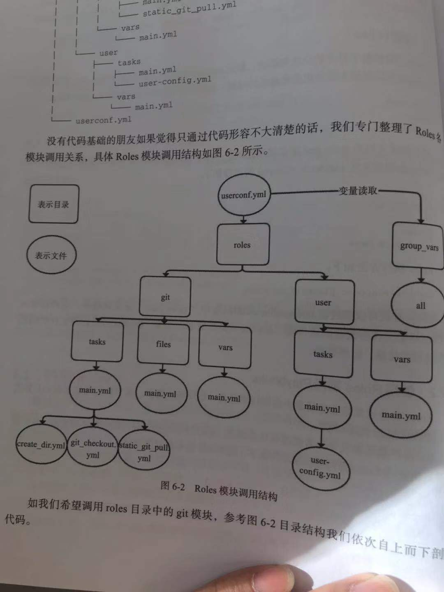

Contents
18.4. Ansible入门与playbook实战¶
- 参考文献
Ansible入门与playbook实战 ## 关于Ansible
Ansible是⼀种批量、⾃动部署⼯具，不仅可以批量，还可以⾃动。
它主要基于ssh进⾏通信，不要求客户端(被控制端)安装ansible
Ansible是新出现的自动化运维工具，基于Python开发，
集合了众多运维工具（puppet、cfengine、chef、func、fabric）的优点。
实现了批量系统配置、批量程序部署、批量运行命令等功能。
Ansible是基于模块工作的，本身没有批量部署的能力。
真正具有批量部署的是Ansible所运行的模块，Ansible只是提供一种框架。
18.4.1. 安装Ansible¶
安装⽅法有多种，可以下载源码后编译安装，可以从git上获取资源安装，也可以rpm包安装。rpm安装需要配置
epel源。
经测试，CentOS 6上安装ansible 2.3版本有可能会⾮常慢，需要将ansible执⾏的结果使⽤重定向或者-t选项保存
到⽂件中，下次执⾏才会快。
cat <<eof>>/etc/yum.repos.d/my.repo
[epel]
name=epel
baseurl=http://mirrors.aliyun.com/epel/7Server/x86_64/
enable=1
gpgcheck=0
eof
或者
rpm -Uvh http://ftp.linux.ncsu.edu/pub/epel/epel-release-latest-7.noarch.rpm
登陆并修改/etc/ssh/sshd_config
PasswordAuthentication no改为PasswordAuthentication yes并保存
yum list ansible
yum install ansible -y
[root@hujianli-linux ansible]# pwd
/etc/ansible
[root@hujianli-linux ansible]# ll
-rw-r--r--. 1 root root 20269 10月 9 09:34 ansible.cfg
-rw-r--r--. 1 root root 1016 10月 9 09:34 hosts
drwxr-xr-x. 2 root root 6 10月 9 09:34 roles
Ansible通过读取默认主机清单 /etc/ansible/hosts文件，修改主机与组配置后，可同时连接到多个被管理主机上
执行任务，比如定义一个websrvs组，包含两台主机的IP地址。再定义一个dbsrvs组，包含一台主机的IP地址，内容如下：
#生成SSH秘钥的连接
在主控端主机（SN2013-08-020）创建密钥，执行：ssh-keygen-t
rsa，有询问直接按回车键即可，将在/root/.ssh/下生成一对密钥，其中
id_rsa为私钥，id_rsa.pub为公钥（需要下发到被控主机用户.ssh目录，同时要求重命名成authorized_keys文件）
[root@hujianli-linux ansible]# ssh-keygen -t rsa
Generating public/private rsa key pair.
Enter file in which to save the key (/root/.ssh/id_rsa):
Created directory '/root/.ssh'.
Enter passphrase (empty for no passphrase):
Enter same passphrase again:
Your identification has been saved in /root/.ssh/id_rsa.
Your public key has been saved in /root/.ssh/id_rsa.pub.
The key fingerprint is:
SHA256:uCeRm5Pwn4FFMiST67fjSfSgKsijG6Z81i0hsPTIOM0 root@hujianli-linux
The keys randomart image is:
+---[RSA 2048]----+
| o.. |
| .+ |
| .o . |
| o . * |
|+o=.. * S |
|o+Eo.*.@ |
|+o +.&.+ |
|*+ + +oB o |
|=+= .+.o |
+----[SHA256]-----+
'
'
[root@hujianli-linux ansible]# ssh-copy-id -i /root/.ssh/id_rsa.pub root@192.168.1.108
/bin/ssh-copy-id: INFO: Source of key(s) to be installed: "/root/.ssh/id_rsa.pub"
The authenticity of host '192.168.1.108 (192.168.1.108)' can't be established.
ECDSA key fingerprint is SHA256:x59MUt+6/V3qTtFlLreCBghCF/BWgqWucIE6JvcIPDI.
ECDSA key fingerprint is MD5:8b:14:a4:27:bb:22:43:dc:f3:49:17:05:30:12:16:5a.
Are you sure you want to continue connecting (yes/no)? yes
/bin/ssh-copy-id: INFO: attempting to log in with the new key(s), to filter out any that are already installed
/bin/ssh-copy-id: INFO: 1 key(s) remain to be installed -- if you are prompted now it is to install the new keys
'
[root@hujianli-linux ansible]# ansible-doc -s yum #列出yum模块的描述信息和操作动作
配置被管理的主机
# 先备份Ansible的host文件
cp -r /etc/ansible/hosts{._bak}
cat >/etc/ansible/hosts <<-EOF
## green.example.com
## blue.example.com
## 192.168.100.1
## 192.168.100.10
172.16.72.28
172.16.72.29
172.16.72.4
# Ex 2: A collection of hosts belonging to the 'webservers' group
## [webservers]
## alpha.example.org
## beta.example.org
## 192.168.1.100
## 192.168.1.110
[webservers]
172.16.72.28
172.16.72.29
172.16.72.4
EOF
18.4.2. 使用expet来批量分发ssh-key¶
# 安装expect、vim
yum -y install expect vim
auto_sshcopyid.exp
# expect脚本
[root@server2 ~]# cat auto_sshcopyid.exp
#!/usr/bin/expect
set timeout 10
set user_hostname [lindex $argv 0]
set password [lindex $argv 1]
spawn ssh-copy-id $user_hostname
expect {
"(yes/no)?"
{
send "yes\n"
expect "*password: " { send "$password\n" }
}
"*password: " { send "$password\n" }
}
expect eof
sshkey.sh
#!/usr/bin/env bash
#usage:xxx
#scripts_name:xxx.sh
# author：xiaojian
PWD=$(pwd)
#ip=`echo -n "$(seq -s "," 3 30)" | xargs -d "," -i echo 172.16.72.{}`
declare -A projects=(
[aget1]="172.16.72.28"
[aget2]="172.16.72.29"
[aget3]="172.16.72.4")
password="admin#123"
#user_host=`awk '{print $3}' /root/.ssh/id_rsa.pub`
for project in ${!projects[@]};do
client="${projects[${project}]}"
# echo $client
${PWD}/auto_sshcopyid.exp root@$client $password &>>/tmp/a.log
if [ "$?" -eq 0 ]; then
ssh root@$client "echo $client ssh Remote communication is ok! "
fi
done
或者使用python脚本
#!/usr/bin/env python
# -*- coding:utf8 -*-
# auther; 18793
# Date：2019/11/8 13:23
# filename: sshkey.py
import sys
import subprocess
IP_list = ["172.16.72." + str(i) for i in range(2, 30)]
res = 0
try:
from pexpect import pxssh
import pexpect
except:
res = subprocess.call("pip install pexpect", shell=True, stdout=open("/dev/null"))
from pexpect import pxssh
import pexpect
username = "root"
passwd = "admin#123"
def task():
for ip in IP_list:
try:
s = pxssh.pxssh()
s.login(ip, username, passwd)
child = pexpect.spawn('ssh-copy-id -i /root/.ssh/id_rsa.pub root@' + ip)
# 将pexpect的输入输出信息写到mylog.txt文件中
fout = open('mylog.txt', 'w')
child.logfile = fout
child.expect(['password:'])
child.sendline('admin#123')
print("\033[32m【{}】 Key registration successful!\033[0m".format(ip))
except:
pass
print("\033[32m Key transfer completed \033[0m")
if __name__ == '__main__':
task()
通过ssh连接到另一个平台，进行相关cmd操作：
#!/usr/bin/env python
# -*- coding:utf8 -*-
# auther; 18793
# Date：2019/12/1 11:44
# filename: sshkey01.py
import paramiko
def sshe(ip, username, passwd, cmd):
try:
ssh = paramiko.SSHClient()
ssh.set_missing_host_key_policy(paramiko.AutoAddPolicy())
ssh.connect(ip, 22, username, passwd)
stdin, stdout, stderr = ssh.exec_command(cmd)
print(stdout.read())
print("{}\tOK\n".format(ip))
ssh.close()
except:
print("{}\t Error\n".format(ip))
if __name__ == '__main__':
sshe("192.168.1.1", "root", "admin#123", "hostname;ifconfig")
18.4.4. 远程命令模块¶
ansible webservers -m command -a "free -m"
ansible webservers -m script -a "/home/test.sh 12 34"
ansible webservers -m shell -a "/home/test.sh"
## shell 模块
[root@hujianli-linux ~]# ansible-doc -s shell
#创建用户后，无交互式给用户设置密码
ansible dbservers -m user -a 'name=user1'
ansible dbservers -m shell -a 'echo "123.com"|passwd user1 --stdin'
ansible webservers -m shell -a "/home/test.sh 12 22"
## script模块
[root@hujianli-linux ~]# ansible-doc -s script
#创建一个本地脚本，复制到被管理主机上运行,本地创建test.sh脚本
ansible dbservers -m script -a 'test.sh'
ansible webservers -m script -a "/home/test.sh 12 34"
18.4.5. command模块¶
(1)功能
#"-m"指定模块名称，"-a"⽤于为模块指定各模块参数
#Ansible管理工具使用-m 选项来指定使用模块，默认使用command模块，即 -m选项省略时会运行此模块，用于在被管理主机上运行命令。
(2)示例
[root@hujianli-linux ansible]# ansible 192.168.1.108 -m command -a 'date'
#使用被管理中的主机分类运行
[root@hujianli-linux ansible]# ansible webservers -m command -a 'date'
[root@hujianli-linux ansible]# ansible dbservers -m command -a 'date'
#所有主机清单中的主机上运行
[root@hujianli-linux ansible]# ansible all -m command -a 'date'
#若省略-m 选项，默认运行command模块
[root@hujianli-linux ansible]# ansible all -a 'tail -l /etc/passwd'
18.4.6. copy模块¶
（1）功能
实现主控端向目标主机拷贝文件，类似于scp的功能。
（2）例子
以下示例实现拷贝/home/test.sh文件至webserver组目标主机/tmp/目
录下，并更新文件属主及权限（可以单独使用file模块实现权限的修
改，格式为：path=/etc/foo.conf owner=foo group=foo mode=0644）。
#Ansible 中的copy模块用于实现文件复制和批量下发文件，src来定义本地源文件路径，使用dest定义被管理主机文件路径，使用content定义信息内容来生成目标文件
[root@hujianli-linux ~]# ansible-doc -s copy
ansible webservers -m copy -a "src=/home/test.sh dest=/tmp/ owner=root group=root mode=0755"
ansible dbservers -m copy -a 'src=/etc/fstab dest=/tmp/fstab.ansible owner=root mode=640'
#将“Hello Ansible Hi Ansible”写入管理主机的/tmp/test.ansible文件中
[root@hujianli-linux ~]# ansible dbservers -m copy -a 'content="Hello Ansible Hi Ansible" dest=/tmp/test.ansible'
18.4.7. stat模块¶
（1）功能
获取远程文件状态信息，包括atime、ctime、mtime、md5、uid、gid等信息
（2）例子
ansible webservers -m stat -a "path=/etc/sysctl.conf"
18.4.8. get_url模块¶
（1）功能
实现在远程主机下载指定URL到本地，支持sha256sum文件校验
（2）例子
ansible webservers -m get_url -a "url=http://www.baidu.com dest=/tmp/index.html mode=0440 force=yes"
18.4.9. yum模块¶
#Ansible中的yum模块负责在被管理的主机数安装与卸载软件包，前提是在每个节点配置自己的YUM仓库，name指定要安装的软件包
#带上软件包的版本号，state指定安装软件包的状态，present、latest用来表示安装，absent表示卸载
[root@hujianli-linux ~]# ansible-doc -s yum
（1）功能
Linux平台软件包管理操作，常见有yum、apt管理方式。
（2）例子
Ubuntu系统
ansible webservers -m apt -a "pkg=curl state=latest
#安装zsh软件包
ansible dbservers -m yum -a 'name=zsh'
#卸载zsh软件包
ansible dbservers -m yum -a 'name=zsh,state=absent'
ansible webservers -m yum -a "name=curl state=latest"
18.4.10. cron模块¶
(1)功能
#Ansible中的cron模块用于定义任务计划，其中有两种状态，(state):present表示添加(省略状态时默认使用),absent表示移除。
[root@hujianli-linux ansible]# ansible-doc -s cron #查看cron模块的描述信息和操作动作
（2）例子
#添加计划任务
[root@hujianli-linux ansible]# ansible dbservers -m cron -a 'minute="*/10" job="/bin/echo hello" name="test cron job"'
192.168.1.108 | CHANGED => {
"changed": true,
"envs": [],
"jobs": [
"test cron job"
]
#查看crontab计划任务
[root@hujianli-linux ansible]# ansible dbservers -a 'crontab -l'
192.168.1.108 | CHANGED | rc=0 >>
#Ansible: test cron job
*/10 * * * * /bin/echo hello
#移除计划任务
[root@hujianli-linux ansible]# ansible dbservers -m cron -a 'minute="*/10" job="/bin/echo hello" name="test cron job" state=absent'
192.168.1.108 | CHANGED => {
"changed": true,
"envs": [],
"jobs": []
}
[root@hujianli-linux ansible]# ansible dbservers -a 'crontab -l'
192.168.1.108 | CHANGED | rc=0 >>
ansible webservers -m cron -a 'name="ntpdate" job="/usr/sbin/ntpdate ntp1.aliyun.com" cron_file=ntpdate_cron user=root minute=*/2' -o
18.4.11. mount模块¶
（1）功能
远程主机分区挂载
（2）例子
ansible webservers -m mount -a "name=/mnt/data src=/dev/sd0 fstype=ext3 opts=ro state=present"
18.4.12. service模块¶
（1）功能
远程主机系统服务管理。
[root@hujianli-linux ~]# ansible-doc -s service #查看service模块的描述
#在 Ansible中使用service模块来控制管理服务器的运行状态，enable表示是否开机自启动， 值为true或者false，使用name来定义服务名称
使用state指定服务状态，取值为started、stoped、restarted
（2）示例
ansible webservers -m service -a "name=nginx state=stopped"
ansible webservers -m service -a "name=nginx state=restarted"
ansible webservers -m service -a "name=nginx state=reloaded"
#安装httpd服务
ansible webservers -m yum -a "name=httpd state=latest"
#查看httpd服务的状态
[root@hujianli-linux ~]# ansible dbservers -a 'service httpd status'
[root@hujianli-linux ~]# ansible dbservers -a 'chkconfig httpd status' #查看http服务开机启动状态
[root@hujianli-linux ~]# ansible dbservers -m service -a 'enable=ture name=httpd state=started' #设置httpd服务为开机自启动
ansible webservers -m service -a "name=nginx state=stopped"
ansible webservers -m service -a "name=nginx state=restarted"
ansible webservers -m service -a "name=nginx state=reloaded"
18.4.13. sysctl包管理模块¶
（1）功能
远程Linux主机sysctl配置。
sysctl模块用于远程主机sysctl的配置
sysctl模块可以在更改配置之后执行/sbin/sysctl –p
ansible-doc sysctl
(2)示例
#在/etc/sysctl.conf中将vm.swappiness设置为5
ansible webservers -m sysctl -a "name=vm.swappiness value=5 state=present sysctl_file=/etc/sysctl.conf"
# 查看是否替换成功
[root@hu-k8s-portworx-master ssh_ansible]# ansible webservers -m command -a "tail -1 /etc/sysctl.conf"
172.16.72.28 | CHANGED | rc=0 >>
vm.swappiness=5
172.16.72.29 | CHANGED | rc=0 >>
vm.swappiness=5
172.16.72.4 | CHANGED | rc=0 >>
vm.swappiness=5
#从/etc/sysctl.conf中删除vm.swappiness条目
ansible webservers -m sysctl -a "name=vm.swappiness state=absent sysctl_file=/etc/sysctl.conf"
#支持ipv4的路由转发（路径与Centos版本有关）
ansible webservers -m sysctl -a "name=net.ipv4.ip_forward value=1 sysctl_set=yes
sysctl_file=/usr/lib/sysctl.d/50-default.conf"
# 在文件中设置ip转发并在必要时重新加载
ansible webservers -m sysctl -a "name=net.ipv4.ip_forward value=1 sysctl_set=yes
state=present reload=yes sysctl_file=/usr/lib/sysctl.d/50-default.conf"
18.4.14. user模块¶
(1)功能
#Ansible中的user模块用于创建新用户和更改、删除已存在的用户。其中name选项用来这么创建的用户名称。
远程主机系统用户管理。
(2)示例
#创建用户
[root@hujianli-linux ansible]# ansible dbservers -m user -a 'name="user1"'
#删除用户
[root@hujianli-linux ansible]# ansible dbservers -m user -a 'name="user1" state=absent'
18.4.15. group模块¶
(1)功能
#Ansible中的group模块用于对用户组进行管理
[root@hujianli-linux ansible]# ansible-doc -s group
- name: Add or remove groups
group:
gid: # Optional `GID' to set for the group.
local: # Forces the use of "local" command alternatives on platforms that implement it. This is
useful in environments that use centralized authentification
when you want to manipulate the local groups. I.E. it uses
`lgroupadd` instead of `useradd`. This requires that these
commands exist on the targeted host, otherwise it will be a
fatal error.
name: # (required) Name of the group to manage.
state: # Whether the group should be present or not on the remote host.
system: # If `yes', indicates that the group created is a system group.
（2）例子
#创建mysql组，将mysql用户添加到mysql组中
[root@hujianli-linux ansible]# ansible dbservers -m group -a 'name=mysql gid=306 system=yes'
[root@hujianli-linux ansible]# ansible dbservers -m user -a 'name=mysql uid=306 system=yes group=mysql'
18.4.16. file模块¶
(1)功能
#Ansible中使用file模块来设置文件属性，path指定文件路径，sec指定源文件路径，使用name或dest来替换创建文件的符号链接
ansible-doc -s file
(2)例子
#设置管理主机文件/tmp/fstab.ansible 所属住为mysql，所属组为mysql，权限为644
[root@hujianli-linux ~]# ansible dbservers -m file -a "owner=mysql group=mysql mode=644 path=/tmp/fstab.ansible"
root@ubuntu:/tmp# ll /tmp/fstab.ansible
-rw-r--r-- 1 mysql mysql 505 Oct 17 02:10 /tmp/fstab.ansible
#设置文件/tmp/fstab.link 为文件/tmp/fstab.ansible的链接文件
[root@hujianli-linux ~]# ansible dbservers -m file -a 'path=/tmp/fstab.link src=/tmp/fstab.ansible state=link'
root@ubuntu:/tmp# ll /tmp/
lrwxrwxrwx 1 root root 18 Oct 17 02:23 fstab.link -> /tmp/fstab.ansible
18.4.17. setup模块¶
(1)功能
在 Ansible中使用setup模块收集、查看被管理主机的facts，每个被管理主机在接收并允许管理命令之前，都会将自己的
相关信息（操作系统版本、IP地址等）发送给控制主机
[root@hujianli-linux ~]# ansible-doc -s setup
(2)例子
[root@hujianli-linux ~]# ansible dbservers -m setup | grep "ansible_python_version"
ansible常用模块参考文章：
18.4.18. ansible配合YAML使用¶
1、playbook的核心元素
hosts : playbook配置文件作用的主机
tasks: 任务列表
variables: 变量
templates:包含模板语法的文本文件
handlers :由特定条件触发的任务
roles :用于层次性、结构化地组织playbook。roles 能够根据层次型结构自动装载变量文件、tasks以及handlers等
2、playbook运行方式
ansible-playbook --check 只检测可能会发生的改变,但不真执行操作
ansible-playbook --list-hosts 列出运行任务的主机
ansible-playbook --syntax-check playbook.yaml 语法检测
ansible-playbook -t TAGS_NAME playbook.yaml 只执行TAGS_NAME任务
ansible-playbook playbook.yaml 运行
#inventory（主机清单），主机清单中将被管理主机进行分组命名
#默认主机清单为/etc/ansible/hosts,例如：
[dbservers]
db1.example.org
db2.example.org:2222
#如果主机名遵循类似的命名规则，则可以使用列表的方式标示各个主机
[webservers]
www[01:05].example.org
[dbservers]
db-[a:f].example.org
#如果不配置SSH秘钥认证，可以这样对管理主机进行认证
vim /etc/ansible/hosts
[wbservers]
192.168.1.110 ansible_ssh_user=root ansible_ssh_pass=123.com
#基础配置yml，关闭iptables、关闭selinux、
root@ubuntu:/etc/ansible# cat test.yml
---
- hosts: dbservers
user: root
tasks:
- name: no selinux
action: command /usr/sbin/setenforce 0
- name: no iptables
action: service name=iptables state=stopped
- name: made up task just to show variables work here
action: command /bin/echo release is
#安装部署httpd服务-version1
[root@hujianli-linux ansible]# cat httpd01.yml
---
- hosts: dbservers
remote_user: root
tasks:
- name: install httpd
yum: name=httpd state=present
- name: install configure file
copy: src=httpd.conf dest=/etc/httpd/conf/
- name: start httpd service
service: name=httpd state=started
#测试playbook
ansible-playbook --check httpd01.yml
#运行playbook
ansible-playbook httpd01.yml
#ubuntu中安装nginx
[root@hujianli-linux ansible]# cat install_nginx.yml
---
- hosts: dbservers
tasks:
- name: Installs nginx web server
apt: pkg=nginx state=installed update_cache=true
notify:
- start nginx
handlers:
- name: start nginx
service: name=nginx state=started
#执行批量安装nginx
ansible-playbook install_nginx.yml
#通过playbook安装管理redis服务
root@ubuntu:/etc/ansible# cat redis_first.yml
- hosts: all
remote_user: root
tasks:
- name: install redis
yum: name=redis state=latest
- name: start redis
service: name=redis state=started
一个playbook的示例：
---
- host: app
vars:
http_port: 80
max_cllients: 200
remote_user: root
# 注意一个name只能包括一个task
task:
- name: yum install apache
yum: pkg=httpd state=latest
- name: write the apache config file
template: src=/srv/httpd.j2 dest=/etc/httpd.conf
notify: restart apache #触发重启
- name: ensure apache is running
service: name=httpd state=started
#触发器
handlers:
- name: restart apache
service: name=httpd state=restarted
shell与ansible的互相转换 apache.sh
yum - y install --quiet httpd httpd-devel
cp /path/httpd.conf /etc/httpd/conf/httpd.conf
cp /path/httpd-vhosts.conf /etc/httpd/conf/httpd-vhosts.conf
service httpd start
chkconfig httpd on
apache.yml
---
- host: all
# 注意一个name只能包括一个task
task:
- name: "安装apache"
command: yum - y install --quiet httpd httpd-devel
- name: "复制配置文件"
command: cp /path/httpd.conf /etc/httpd/conf/httpd.conf && cp /path/httpd-vhosts.conf /etc/httpd/conf/httpd-vhosts.conf
- name: "启动apache，设置开机自启"
command: service httpd start && chkconfig httpd on
apache2.yml
---
- host: all
sudo: yes
# 注意一个name只能包括一个task
task:
- name: "安装apache"
yum: name={{ item }} state=present
with_items:
- httpd
- httpd-devel
- name: "复制配置文件"
copy:
src: "{{ item.src }}"
dest: "{{ item.dest}}"
owner: root
group: root
mode: '0644'
backup: yes
with_items:
- {
src: "/tmp/httpd.conf",
dest: "/etc/httpd/conf/httpd.conf"}
- {
src: "/tmp/httpd-vhosts.conf",
dest: "/etc/httpd/conf/httpd-vhosts.conf"}
- name: 检查Apache的运行状态，并设置为开机自启动
service:
name: httpd
state: started
enabled: yes
18.4.19. 示例：安装tomcat软件¶
创建vars.yml文件和tomcat.yml文件，在统计目录下 vars.yml
---
#软件包下载路径
download_dir: /tmp
#tomcat版本
tomcat_version: 8.0.35
#tomcat安装路径
tomcat_dir: /opt/tomcat
#solr安装路径
solr_dir: /opt/solr
#solr版本号
solr_version: 6.1.0
tomcat.yml
---
- hosts: all
vers_files:
- vars.yml
task:
- name: 发送JDK软件包和配置文件到远程主机
copy: "src={{item.src}} dest={{item.dest}}"
with_items:
- src: "./jdk-8u11-linux-x64.tar.gz"
dest: "/tmp"
- src: "./java.sh"
dest: "/etc/profile.d/"
- name: 创建java安装目录
command: mkdir -p /opt/java
................
- name: 创建tomcat安装目录
command: mkdir -p {{tomcat_dir}}
- name: 添加运行tomcat所需的普通用户
user: "name=tomcat shell=/sbin/nologin"
- name: 下载tomcat软件包
get_url:
url: file:///tmp/afile.txt
dest: /tmp/afilecopy.txt
- name: 解压tomcat软件包
command: tar -C {{tomcat_dir}} -xvf ............
- name: 发送配置文件到远程主机
copy: "src=./tomcat.conf dest=/etc/init/tomcat.conf"
- name: 重载配置文件
command: initctl reload-configuretion
- name: 下载solr软件包
ger_url:
..........
- name: 创建安装目录
............
Block块¶
---
- hosts: web
tasks:
# Install and confiugre apache on redhat/centos hosts
- block:
- yum: name=httpd state=present
..............
when: ansible_os_family == "RedHat"
sudo: yes
# Install and confiugre apache on debian/ubantu hosts
- block:
- apt: name=httpd state=present
..............
when: ansible_os_family == "Debian"
sudo: yes
块功能用来处理任务的异常
---
- hosts: web
task:
- block:
- name: shell script to connect the app to monitoring service.
script: monitor-connect.sh
rescue:
# 只有脚本报错时才知晓
- name:
debug: msg="There was an error in the block."
always:
# 无论结果如何都执行
- name:
debug: msg="This always exectes..."
动态Includes¶
tasks/tasks01.yml
---
- hosts: web
task:
- name: check if extra_tasks.yml is present
#判断文件是否存在，并获取返回值
stat: path=extras/extra-task.yml
register: extra_task_file
connection: local
tasks/main.yml
# 只有当extra_task_file文件存在时，加载
- include: tasks01.yml
when: extra_task_file.stat.exists
18.4.20. playbooks Includes使用技巧¶
- host: all
remote_user: root
tasks:
[.....]
- include: web.yml #引用 web.yml playbook文件
- include: db.yml # 引用 db.yml playbook文件
好处：如果需要执行全部命令时，只要通过一条命令执行主playbook文件即可。如果针对某个功能变更，只需要修改或执行对应的playbook文件
18.4.21. Roles介绍¶
层次化，结构化地组织Playbook，使用角色（roles），可以根据层次结构自动装载变量文件，tasks以及handlers等 roles就是将变量、文件、任务、模块及处理器设置于单独的目录中，便捷地使用它们
mkdir -p ansible_playbooks/roles/{websrvs,dbsrvs}/{tasks,files,templates,meta,handlers,vars}
mkdir -p ansible_playbooks/group_vars/vars.yml
一个大型项目级别的目录框架就创建完毕。如下：
[root@pxe-server ~]# tree ansible_playbooks/
ansible_playbooks/
├── group_vars
│ └── vars.yml // 全局变量
└── roles
├── dbsrvs // dbsrvs应用目录
│ ├── files
│ ├── handlers
│ ├── meta
│ ├── tasks
│ ├── templates
│ └── vars
└── websrvs // websrvs应用目录
├── files // 安装包、配置文件、脚本文件目录
├── handlers // 触发器配置文件目录
├── meta
├── tasks // 各项任务目录
├── templates // 配置模板文件目录 支持j2格式
└── vars //
17 directories, 0 files
# 注：files、templates、tasks：所有文件、模板都可以放在这里，放在这里最大的好处是不用指定绝对路径

18.4.22. Roles中Files和Templates的区别¶
Files：用于文件处理，文件无需写绝对路径即可将文件传输至远程主机 Templates目录下文件以Jinja2渲染，且传输文件至远程主机的同时支持预定义变量替换。通常引用替换变量的的格式为 {{variable}}
18.4.23. Jinja2模板可以实现高度自定义¶
语法不进行扩展，语法和shell语法类似
- Jinja2 For循环
- Jinja2 if 条件
- Jinja2 多值合并
- Jinja2 default()设定
18.4.24. 创建roles时的注意事项：¶
（1） 目录名同角色名的定义
（2） 目录结构有固定格式
1）files: 静态文件；
2）templates: Jinja2模板文件；
3）tasks: 至少有一个main.yml文件,定义各tasks；
4）handlers: 至少有一个main.yml文件，定义各handlers；
5）vars: 至少有一个main.yml文件，定义变量；
6）meta: 定义依赖关系等信息
(3) 在roles之外，通过site.yml定义Playbook，额外也可以有其他的yml
Ansible 部署示例大全：¶
https://galaxy.ansible.com/search?deprecated=false&keywords=redis&order_by=-relevance&page=1
Ansible 的Galaxy¶
Ansible的官方Role分享平台
https://galaxy.ansible.com/
Ansible官方应用部署的例子
https://github.com/ansible/ansible-examples